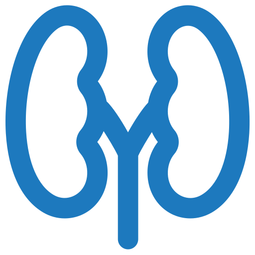
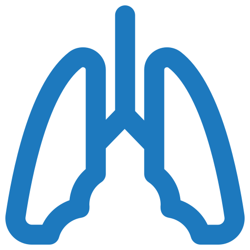
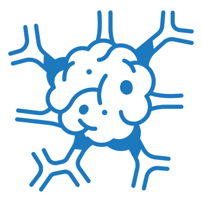

Имунная терапия

Иммунотерапия — это одно из направлений таргетной терапии. Различия в том, что ее мишенью являются не опухолевые клетки, а лимфоциты больного. Специальные препараты учат «защитников» организма вновь распознавать и убирать «неправильные» опухолевые клетки
Как работает иммунная терапия
В процессе развития опухоли раковые клетки учатся «шифроваться» так хорошо, что иммунная система человека перестает их распознавать и уничтожать. Препараты иммунотерапии обучают лимфоциты находить опухолевые клетки и атаковать их.
Для создания препарата нужны частички опухоли или заранее подготовленный их аналог, а также кровь пациента. Все это помещается в сосуд, затем дендритные клетки из костного мозга, которые содержатся в крови, начинают уничтожать опухолевые «частички». Дендритные клетки запоминают, как выглядит опухоль и в следующий раз, когда их введут в организм человека, лимфоциты уже смогут узнать «врага» в лицо и убить его.
Первые попытки вылечить онкобольных пациентов при помощи иммунотерапии были сделаны свыше 100 лет назад. Уильям Коли считается одним из родоначальников метода. Он заметил, что у пациентов с рожистым воспалением (бактериальная кожная инфекция) злокачественное новообразование находилось в стадии регрессии. Хирург предположил, что инфекция может дать толчок для уничтожения иммунитетом опухолевых клеток. В результате в 1891 году он ввел больному саркомой стрептококковые бактерии и добился уменьшения злокачественного новообразования.
В позапрошлом и прошлом веках исследования Коли были подвергнуты активной критике, поскольку не имели вразумительного теоретического обоснования. Однако постепенно накапливаемые знания и новые попытки активирования защитных сил организма для борьбы со злокачественными опухолями послужили толчком к активному развитию иммунотерапии.
Лечение рака препаратами иммунной терапии
Возможность вылечить разные виды онкологических заболеваний с помощью иммунотерапии зависит от препарата и особенностей опухоли. Иммунотерапия применяется для лечения :
- меланомы
-  рака почки
-  легких
- мочевого пузыря
- желудка
- простаты
- глиобластомы
- поджелудочной железы
-  лимфомы Ходжкина
- и еще нескольких видов опухолей
Терапия показала прорывные результаты в лечении меланомы и рака легких. Для поддержания и восстановления работы иммунной системы используются препараты, помогающие вовремя находить и уничтожать клетки с поврежденными генами. Когда число переродившихся клеток достигает определенной критической величины, защитные механизмы перестают адекватно работать. Иммунные клетки перестают реагировать на опухоль и атаковывать ее. Задача иммунотерапевтических препаратов активировать процесс распознавания и уничтожения опухолевых клеток.
Также иммунотерапия сейчас успешно применяется при лечении рака легких. Существуют разные мутации и разные виды этого рака. И при некоторых из них иммунотерапия оперативно заменила химию, продемонстрировав свою эффективность и безопасность.
Следует понимать, что определить, какое лечение подойдет в конкретном случае, может только лечащий врач.
Иммунотерапия — молодое, но перспективное направление. Она произвела своеобразную революцию в лечение рака. Оказалось, что можно не только напрямую влиять на раковые клетки, но и эффективно бороться с ними с помощью активации иммунной системы человека.